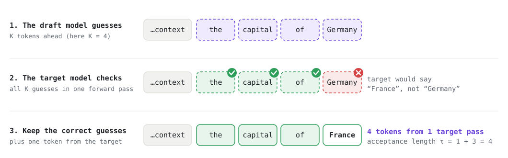
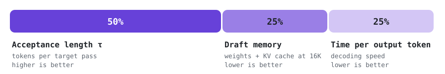

Overview
Large language models write one token at a time, and each token needs a full, expensive pass through the model. Speculative decoding speeds this up: a small, fast draft model guesses the next few tokens, and the large target model checks all the guesses in a single pass. Every correct guess is a token the target didn't have to produce on its own, and the output stays the target's output.
In this competition the target model and the inference engine are fixed. You design and build the draft model. The competition runs in two phases: first you submit a report describing your draft model. The top 3 teams win prizes, present their work at the emc2 workshop at AAAI 2027, and go on to submit a paper and their draft model. In phase 2, the better your draft guesses and the lighter and faster it is, the higher you score. You submit model files only, never code, and we evaluate every draft model ourselves on the same hardware.
- target
- Qwen3.8-27B # bf16, text only
- engine
- vLLM v0.31.0 # unmodified
- context
- 16K tokens
- baseline
- built-in MTP head # scores 100
- phase_1
- a report about your draft model
- phase_2
- a paper + draft model weights and config
- eval_hw
- TBD
Two phases
Report
Every team submits a report about its draft model. No registration is needed.
- Reports are reviewed and ranked.
- The top 3 teams win prizes and advance to phase 2.
- Format, page limit and review criteria: TBD
Paper
The 3 selected teams write a paper and submit their draft model.
- Only phase 2 draft models are run on our hardware.
- Each one is scored on a hidden test set (see Scoring).
- Paper format and page limit: TBD
For the 3 winners of phase 1
- prizePrizesto be announced
- stageA talk at the emc2 workshopPresent your work at emc2 at AAAI 2027, Montréal, February 2027.
How it works
Speculative decoding pairs two models. The drafter (your model) is small and cheap, so it quickly guesses the next few tokens. The verifier is the large target model: it checks all the guesses in one forward pass, keeps the ones it agrees with, and supplies the correct token at the first miss. The text is exactly what the verifier would have written, produced in fewer of its expensive passes.


Your path through the competition
- Write a reportPhase 1: describe your draft model and submit the report.
- Get selectedThe top 3 teams win prizes, present at the emc2 workshop and advance to phase 2.
- Build and checkPhase 2: train the draft, then run the kit's
validateandevallocally. - SubmitSubmit your paper, push the draft model to a gated Hugging Face repo and send us its
repo@commit.
Scoring

This scoring applies to the draft models submitted in phase 2. Phase 1 reports are reviewed, not run; see Two phases.
Every phase 2 draft model runs on our hardware on a hidden test set: fresh prompts written by the organizers, never published. Each metric is measured relative to the public baseline (B).
| Metric | Weight | What it measures | Better |
|---|---|---|---|
| Acceptance length τ | 50% | Tokens produced per target forward pass | Higher |
| Draft memory M | 25% | Draft weights plus its KV cache at the full 16K context | Lower |
| Time per output token (TPOT) | 25% | Real decoding speed, median over prompts | Lower |
The baseline scores exactly 100. To be ranked, a draft's acceptance length must reach at least a set fraction of the baseline's, and the memory and speed terms are capped, so a tiny draft that barely guesses can't win on size alone. Gate and cap values: TBD, calibrated before launch.
Rules
A summary. The full rules document is the reference: Full rules TBD.
01 Report
- One report per team describing its draft model.
- Format and page limit: TBD
- Review criteria: TBD
- The top 3 teams win prizes, present at the emc2 workshop and advance to phase 2.
02 Paper
- A paper about your draft model. Format and page limit: TBD
- The draft model as one folder:
config.json,*.safetensorsweights,spec.jsonnaming the draft family, andmetadata.json. - Draft families:
mtp(a replacement multi-token-prediction head, like the baseline),eagle3,draft_model(a small language model with the target's vocabulary) ormedusa. - At most 1.5B parameters and 3 GB of files.
- Hosted in your own gated Hugging Face repo; you send us
repo@commit. - One final submission per selected team.
Not allowed
- Any code: custom classes, remote code, pickle files, symlinks
- Faking acceptance or changing how guesses are verified
- Keeping state across requests
- Copying target layers into the draft (sharing its embedding or output layer is fine)
- Training on the hidden test prompts
Important dates
- TBDParticipant kit released
- TBDPhase 1: report submission deadline
- TBDPhase 1: winners announced (they advance to phase 2)
- TBDPhase 2: paper and draft model submission deadline
- TBDPhase 2: results announced
- Feb 2027emc2 workshop at AAAI 2027, Montréal: phase 1 winners present
All deadlines are 23:59 Anywhere on Earth (AoE) TBD.
Important links
FAQ
How many teams reach phase 2?
The top 3 teams from the report phase.
What do the phase 1 winners get?
Prizes (to be announced), a talk at the emc2 workshop at AAAI 2027 in Montréal in February 2027, and a place in phase 2.
Is my phase 1 report run on your hardware?
No. Reports are reviewed. Only phase 2 draft models are run and scored on our hardware.
Do I need the official evaluation GPU for phase 2?
No. Any NVIDIA GPU with at least 80 GB of memory runs the kit. Acceptance length and memory don't depend on the GPU, and the kit compares your speed with the baseline's on your own hardware.
Can I modify vLLM or submit code?
No. The engine is the same unmodified vLLM release for everyone, and submissions contain model files only.
Which training data can I use?
Any data you are allowed to use, including text generated by the target model. Only the hidden test prompts are off limits, and they are never published.
How large can my draft model be?
At most 1.5 billion parameters and 3 GB of files. Smaller drafts also score better on memory.
Will my submission be public?
No. You keep it in a gated Hugging Face repository and approve only the organizers' account.